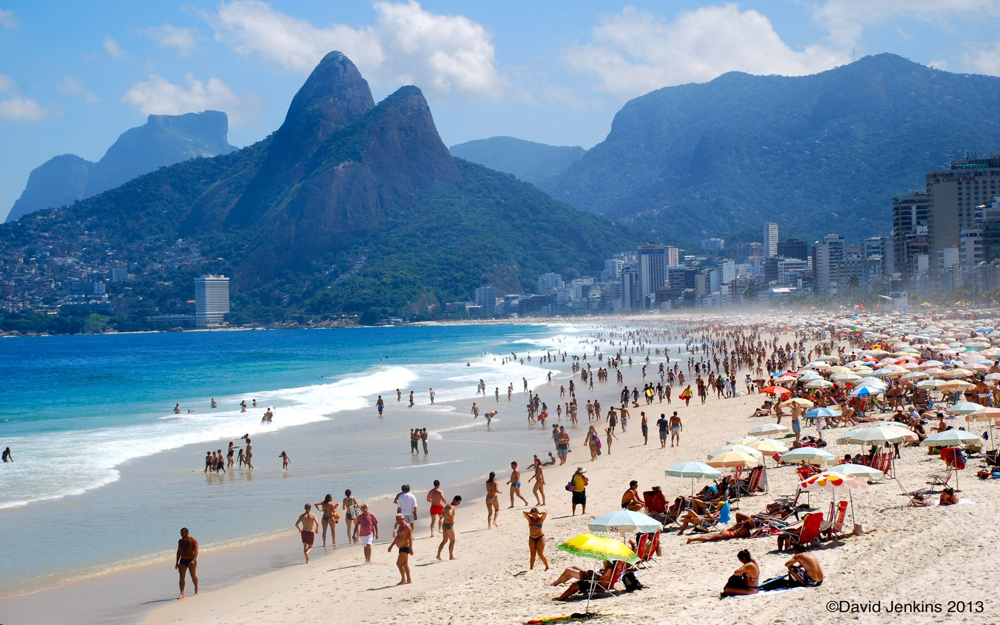
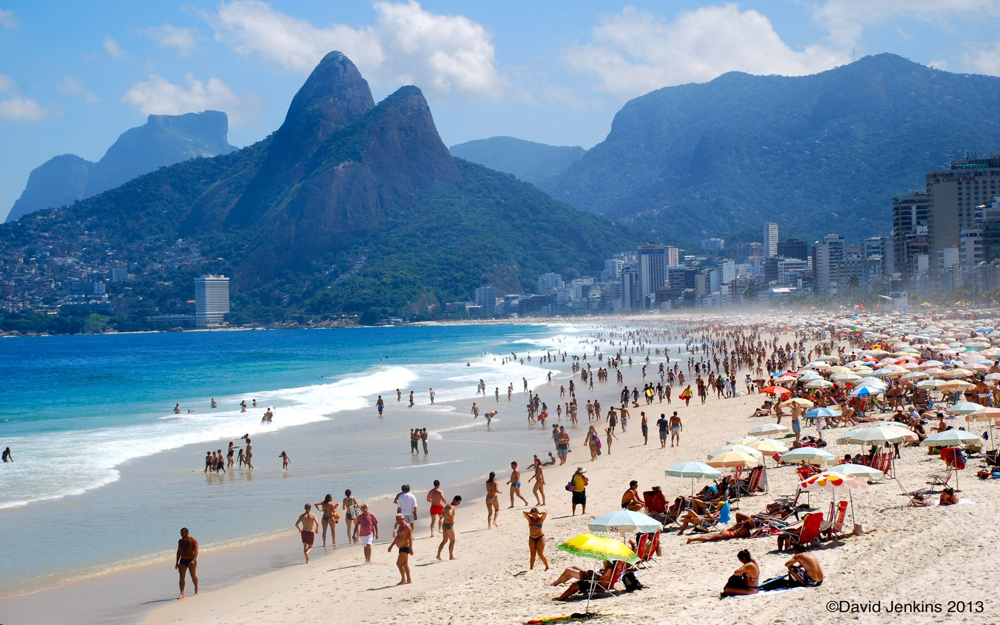

Bem-vindo
A minha cidade é muito linda! Aqui encontras atalhos para outras páginas do Lab 3.
Vista do Rio
Uma das paisagens mais icónicas da cidade:
A minha cidade é muito linda! Aqui encontras atalhos para outras páginas do Lab 3.
Uma das paisagens mais icónicas da cidade:
